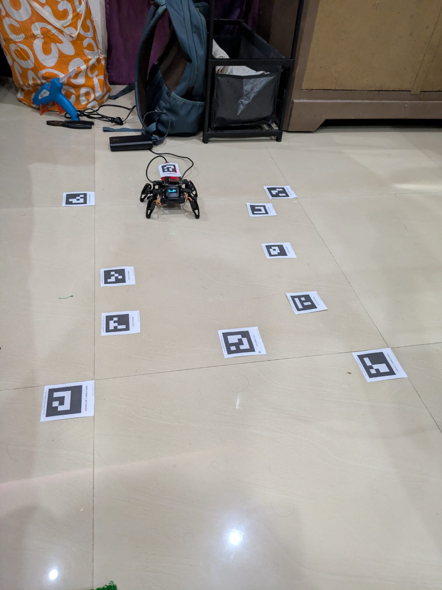
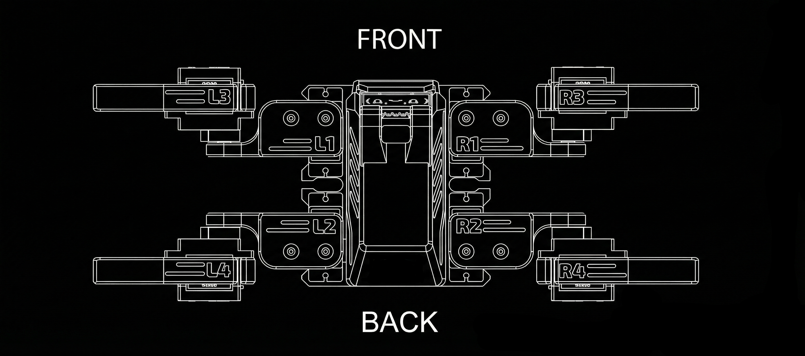
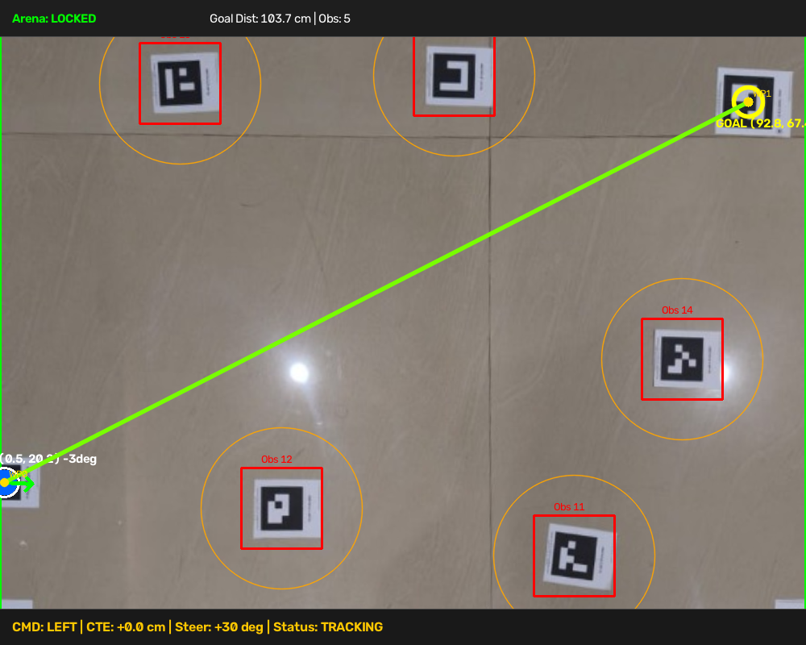
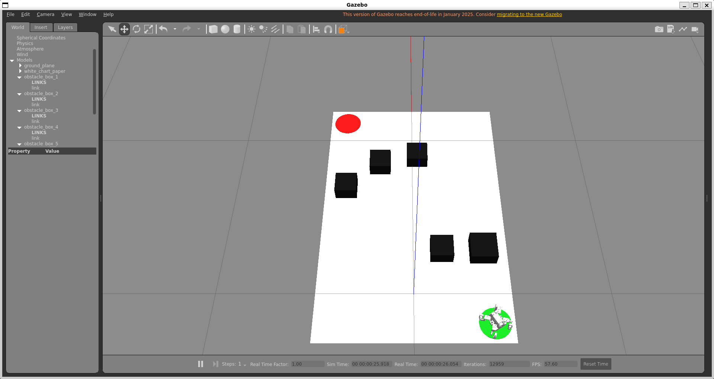
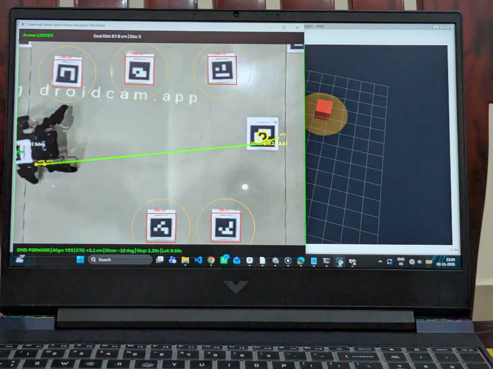

Vision-Guided Autonomous Quadruped Navigation & 3D Digital Twin
Overhead Planar Homography & ArUco Tracking
Dynamic A* Search with 5 cm Safety Clearance
Stanley Path-Following & Stride Cadence Sync
ROS 2 Humble, RViz & Gazebo Digital Twin
/cmd?go=...) over Wi-Fi to an on-board ESP32 microcontroller at a paced 1.2s cadence.


chartpaper_arena.world) matching physical dimensions (100 x 80 cm), with realistic ground contact friction and gravity models.
/joint_states, TF frame transforms (/map → /base_footprint), planned /path, and 3D obstacle markers.
--swap-ids CLI parameter to dynamically flip robot and goal tracking identities in software without re-taping physical stickers.